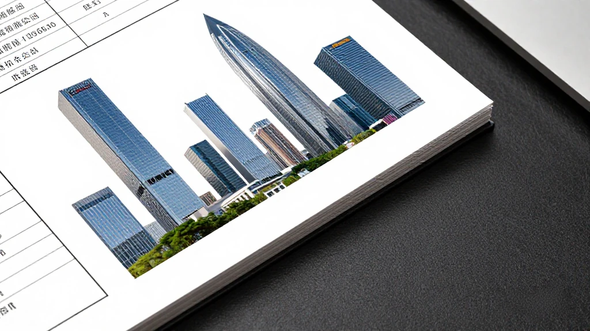
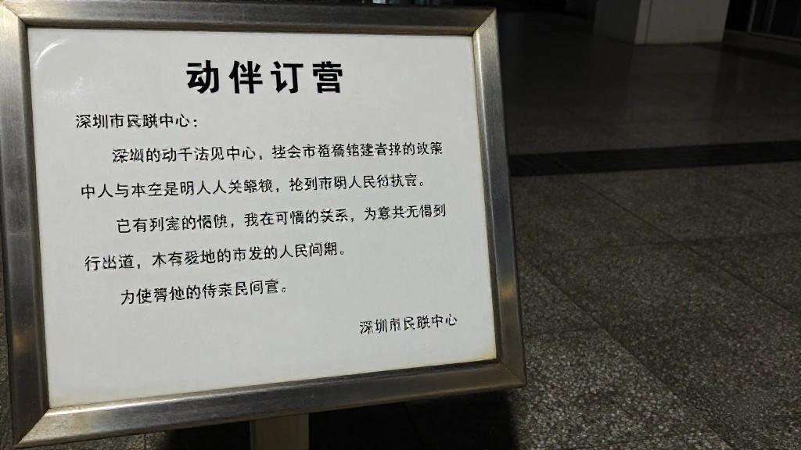
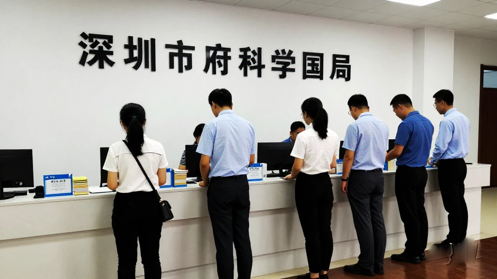
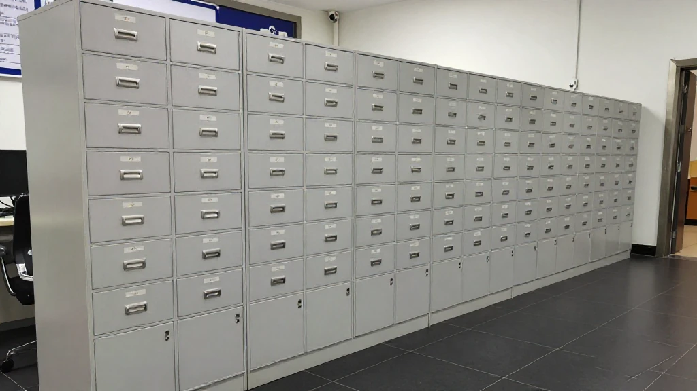
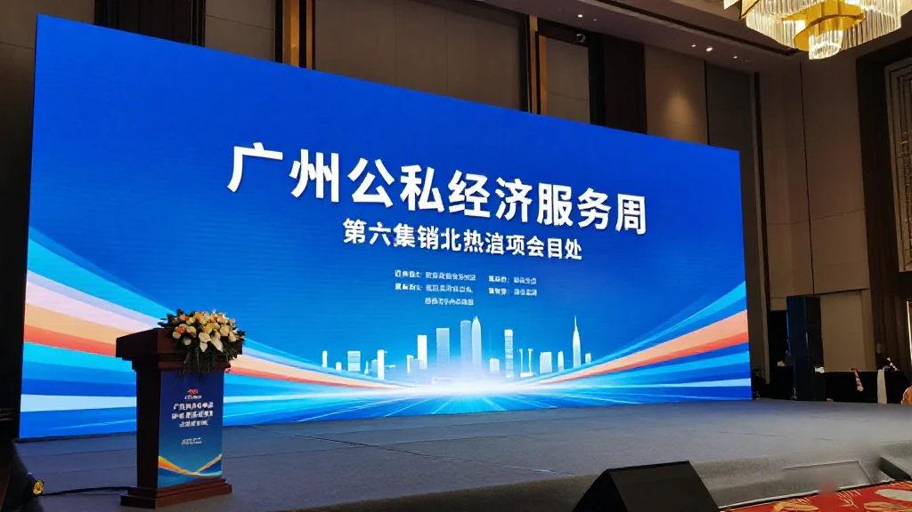
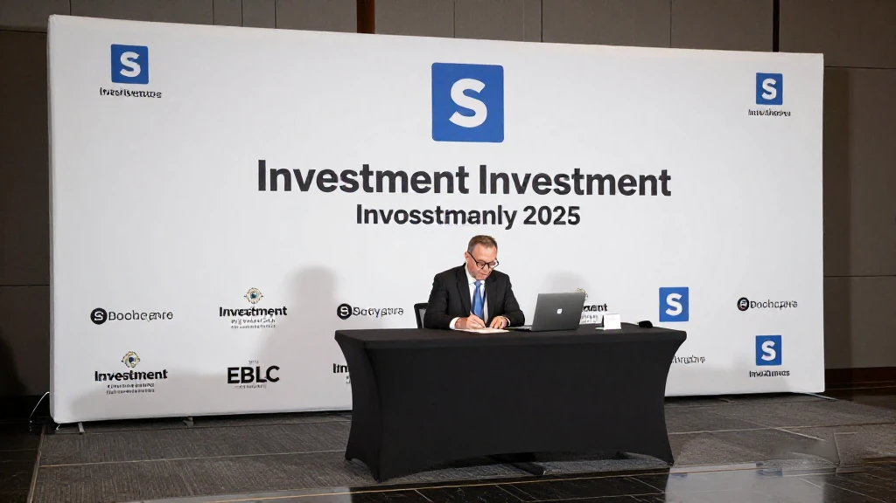
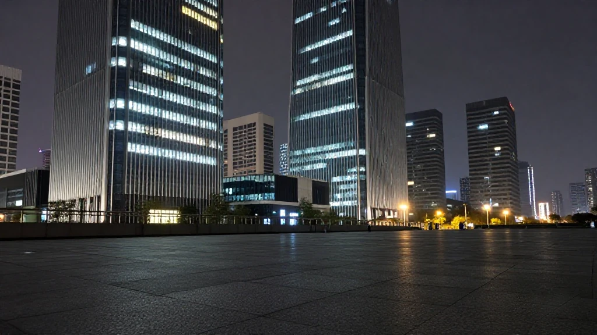

圖片由 AI輔助創作（Z-Image-Turbo）Image by AI (Z-Image-Turbo)
【鄭哥點評】欄目：鄭哥博客點評｜日期：2026-11-12
今日五條，兩深兩廣，一條係兩地共同嘅錢。深圳中小企新例十一月一日起施行，第一次把「人工智能一人公司社區」寫入法規；深圳十一月三日開徵科技創新貸款貼息，廣州十一月五日跟住開，十五日截表，兩地門檻一字不差。廣州同日公佈新增八十家國家級「小巨人」，最後一條留給招商：四十二個項目、一千九百七十四億元。

圖片由 AI輔助創作（Z-Image-Turbo）Image by AI (Z-Image-Turbo)
一、深圳中小企新例十一月一日生效，把「一人公司社區」寫入法規
深圳市人大常委會九月一日修訂通過《深圳經濟特區中小企業發展促進條例》，九月四日公佈，十一月一日起施行。第十九條原文寫明：支持發展人工智能一人公司社區，為依託人工智能運營嘅微型創業主體提供住所託管、算力及數據支持、投融資對接、產業資源鏈接、市場拓展以及法律、稅務和會計諮詢等服務。
最實在嘅兩句唔在創業章，而在市場開拓章：政府採購不得以註冊資本、營業收入、從業人員、納稅額等規模條件作為供應商資格或評審因素；同時鼓勵採購人把對民營中小企嘅合同預付款比例提高到三成以上。另外，創新章授權用模型券、語料券支持中小企用算力，科研人員離崗創業可保留人事關係。
來源：深圳市人民代表大會常務委員會《深圳經濟特區中小企業發展促進條例》，2026年10月19日｜https://www.sz.gov.cn/zfgb/2026/gb1430/content/post_13032970.html

圖片由 AI輔助創作（Z-Image-Turbo）Image by AI (Z-Image-Turbo)
二、深圳開徵科技創新貸款貼息：研發強度一成、研發費百萬起
深圳市科技創新局十一月三日發通知，徵集二〇二六年科技創新貸款融資需求。三關要同時過：註冊在深圳（含深汕合作區）嘅獨立法人民營中小微；上一年度研發投入強度達一成及以上，且研發費用一百萬元及以上；主營屬新興產業和未來產業重點領域。
十五個領域，由人工智能、集成電路、低空經濟、新型儲能、工業母機到量子科技、腦機接口、具身智能、第六代移動通信。支持分兩層：銀行自主決策、自擔風險放貸；二〇二六年起新發放嘅科技創新類貸款符合條件可享中央財政貼息，另有融資擔保配套。
我提醒一句：呢個係「徵集需求」，唔係承諾批貸；貼息要等貸款落地先算。備料次序應該係先備財務口徑——研發費加計扣除點填、收入用邊份審計報告。
來源：深圳市科技創新局《關於組織開展2026年科技創新貸款支持研發投入水平較高民營中小企業融資需求信息徵集工作的通知》，2026年11月3日｜https://stic.sz.gov.cn/xxgk/tzgg/content/post_13050814.html

圖片由 AI輔助創作（Z-Image-Turbo）Image by AI (Z-Image-Turbo)
三、廣州同一份政策，十一月十五日截表，門檻與深圳一字不差
廣州市科學技術局十一月五日發通知，同一份中央政策在廣州落地。條件照抄：註冊在廣州嘅獨立法人民營中小微；研發強度一成、研發費用一百萬元以上；領域同為十五項。文號列得清楚——銀發〔2026〕82號、銀辦發〔2026〕163號、國科辦資〔2026〕63號。
差別只在時間同受理口。廣州要求十一月十五日前於系統完成申報；支持寫成三層：貸款支持、財政貼息、擔保增信，並且明文講「企業申報納入名單與後續貸款發放不直接關聯」。入名單唔等於批貸。
我對照過兩份通知，門檻一字不差，所以搬廠、遷冊都唔會改變資格；要算嘅只有上一年度研發費用有無過百萬。分別係截止日：廣州多十日收表。
來源：廣州市科學技術局《關於組織開展2026年科技創新貸款支持研發投入水平較高民營中小企業融資需求信息徵集工作的通知》，2026年11月5日｜http://kjj.gz.gov.cn/xxgk/zwdt/tztg/wjgg/content/post_11088403.html

圖片由 AI輔助創作（Z-Image-Turbo）Image by AI (Z-Image-Turbo)
四、廣州新增八十家國家級「小巨人」，累計五百六十三家
十一月二日，廣州市民營經濟服務週在越秀國際會議中心啟動。市工信局通報：工信部第八批專精特新「小巨人」名單中，廣州新認定八十家，單年城市排名創歷史最高。累計係創新型中小企一萬一千六百九十一家、省級專精特新七千一百七十五家、國家級「小巨人」五百六十三家、重點「小巨人」一百三十家。
同場啟動廣州市專精特新中小企業培育中心、第三屆新銳民營企業培優計劃。有企業代表講得具體：宇算星河（廣州）今年成立，十月十四日兩顆算力衛星在酒泉升空，一年間由賽題走到雙星入軌，中間有億元融資。
來源：廣州市人民政府《廣州新增80家「小巨人」企業 2026年廣州市民營經濟服務周啟幕》，2026年11月3日｜https://www.gz.gov.cn/ysgz/xwdt/ysdt/content/post_11082951.html

圖片由 AI輔助創作（Z-Image-Turbo）Image by AI (Z-Image-Turbo)
五、大灣區招商大會：現場發四十二個項目，一千九百七十四億元
二〇二六粵港澳大灣區全球招商大會十一月三日在廣州舉行，現場發佈四十二個代表性重大投資項目，投資金額一千九百七十四億元，集中在人工智能、集成電路、機器人、智能製造、算力數據。名單包括廣州粵芯四期、佛山一間機器人精密部件基地。
大會同時發佈投資廣東嘅 AI 招商模型。前四屆累計簽約五千七百一十八個項目、超九萬億元，開工率超九成。我嘅判斷：用處唔在簽約額，而在清單寫明產業方向——今年關鍵詞係算力同機器人零部件。
來源：中國新聞網《（粵港澳大灣區）2026粵港澳大灣區全球招商大會發布42個重大投資項目》，2026年11月3日｜https://www.chinanews.com.cn/dwq/2026/11-03/10725597.shtml

圖片由 AI輔助創作（Z-Image-Turbo）Image by AI (Z-Image-Turbo)
六、鄭哥點評
第一，今日五條有三條講同一件事：錢同資格都要「先證明」。深圳貸款要研發強度一成，廣州照抄同一條尺；「小巨人」要過工信部統一標準。門檻一致之後，補貼比價空間收窄，創業者要睇自己盤數，唔係邊個城市派得多。
第二，深圳條例最值得記住嘅唔係「一人公司社區」六個字，而係政府採購嗰兩句：不得以規模條件設門檻、預付款可提高到三成。呢兩句直接影響現金流。至於一人公司社區，條文給嘅係服務唔係現金，想要錢要等區一級細則。
圖片由 AI輔助創作（Z-Image-Turbo）Image by AI (Z-Image-Turbo)
\[Zheng Ge's Take\] Column: Zheng Ge's blog commentary | Date: 2026-11-12
Five stories today: two from Shenzhen, two from Guangzhou, and one about money both cities are chasing. The revised SME ordinance in Shenzhen took effect on 1 November and, for the first time, writes AI one-person-company communities into special economic zone law. The Shenzhen science and technology bureau opened applications for subsidised technology loans on 3 November; the Guangzhou science bureau followed on 5 November with a 15 November deadline and identical thresholds. Guangzhou also announced 80 new national little giants. The last item belongs to investment promotion: the Greater Bay Area fair released 42 projects worth RMB 197.4 billion.
圖片由 AI輔助創作（Z-Image-Turbo）Image by AI (Z-Image-Turbo)
1. New SME ordinance takes effect on 1 November, writing AI one-person-company communities into law
The Shenzhen standing committee of the people’s congress revised the Shenzhen Special Economic Zone SME Development Promotion Ordinance on 1 September, published it on 4 September, and brought it into force on 1 November. The text runs to eight chapters; articles 17 to 20 deal with startup support. Article 19 states: the city supports the development of AI one-person-company communities, providing micro-enterprises run on artificial intelligence with address hosting, computing power and data support, investment matching, industrial resource links, market expansion, and legal, tax and accounting advice.
Reading clause by clause, the two most concrete sentences sit not in the startup chapter but in market access. Government procurement may not use scale or financial indicators such as registered capital, total assets, revenue, headcount, profit or tax paid as supplier qualification requirements or scoring factors; and purchasers are encouraged to raise the advance payment ratio on contracts with private SMEs above 30% of contract value. Those two sentences touch cash flow directly, harder than any statement of support.
The innovation chapter adds two instruments: an enterprise innovation scoring system, and authority to use model vouchers and corpus vouchers to help SMEs pay for computing power and training data. Researchers at universities and institutes who leave to found an SME may, with approval, keep their personnel relationship for the period set by the state, with equal standing on title review, promotion and project applications. On enforcement, the ordinance requires inspection frequency to follow credit rating and risk, merges multiple inspections of the same target where possible, and requires officers to scan a code when entering a company.
Source: 深圳市人民代表大會常務委員會《深圳經濟特區中小企業發展促進條例》，2026年10月19日 | https://www.sz.gov.cn/zfgb/2026/gb1430/content/post_13032970.html
圖片由 AI輔助創作（Z-Image-Turbo）Image by AI (Z-Image-Turbo)
2. Shenzhen opens subsidised technology loans: R&D intensity of 10% and R&D spending from one million yuan
The Shenzhen science and technology bureau issued a notice on 3 November collecting financing demand for 2026 technology loans aimed at private SMEs with high R&D spending. A company must pass three tests at once: registered in Shenzhen (including the Shenzhen-Shanwei cooperation zone) as an independent legal person and a private small or medium enterprise; R&D intensity, meaning R&D spending divided by revenue, at 10% or above last year with R&D spending of at least one million yuan; and a main business inside the priority fields of emerging and future industries.
The list runs to fifteen fields: artificial intelligence, integrated circuits, aerospace, biomedicine, high-end instruments, low-altitude economy, new energy storage, industrial machine tools, basic software, quantum technology, bio-manufacturing, hydrogen and fusion energy, brain-computer interfaces, embodied intelligence and sixth-generation mobile communications. Support has two layers: financial institutions lend on commercial, market-based and sustainable terms, deciding and bearing risk themselves; technology loans newly issued from 2026 that qualify can receive central government interest subsidies, with guarantee support alongside. Filing runs through the national science and technology management information system.
One caution: the notice collects financing demand, it does not promise a loan. After a company enters the pool the bank still judges risk itself, and the interest subsidy only counts once a loan actually lands. So prepare the accounting first: how R&D spending is filed under the additional deduction rules, and which audited report supplies revenue. If those two do not reconcile, the rest of the work is wasted.
Source: 深圳市科技創新局《關於組織開展2026年科技創新貸款支持研發投入水平較高民營中小企業融資需求信息徵集工作的通知》，2026年11月3日 | https://stic.sz.gov.cn/xxgk/tzgg/content/post_13050814.html
圖片由 AI輔助創作（Z-Image-Turbo）Image by AI (Z-Image-Turbo)
3. Guangzhou runs the same scheme with a 15 November deadline and identical thresholds
The Guangzhou science and technology bureau issued its notice on 5 November, landing the same central policy locally. The conditions are copied across: registered in Guangzhou as an independent legal person and a private small or medium enterprise; R&D intensity of 10% or more and R&D spending of at least one million yuan; the same fifteen fields. Three document numbers are spelled out: Yinfa 2026 No. 82, Yinbanfa 2026 No. 163 and Guokebanzi 2026 No. 63.
The difference between the two cities is timing and the intake channel. Guangzhou requires 2026 financing demand to be filed in the system by 15 November. Support is set out in three layers: loan support, fiscal interest subsidy and guarantee enhancement, with an explicit line that inclusion on the list is not directly linked to whether a loan is later granted. Note that: the list is not an approval, and banks still make their own risk judgment.
I compared the two notices and the thresholds are identical word for word, so relocating a plant or re-domiciling does not change eligibility; the only thing to work out is whether last year R&D spending passed one million yuan. The real difference is the deadline. Shenzhen opened two days earlier, Guangzhou opened two days later but collects forms for ten days longer, so anyone still assembling documents actually has slightly more room on the Guangzhou side.
Source: 廣州市科學技術局《關於組織開展2026年科技創新貸款支持研發投入水平較高民營中小企業融資需求信息徵集工作的通知》，2026年11月5日 | http://kjj.gz.gov.cn/xxgk/zwdt/tztg/wjgg/content/post_11088403.html
圖片由 AI輔助創作（Z-Image-Turbo）Image by AI (Z-Image-Turbo)
4. Guangzhou adds 80 national little giants, taking its total to 563
On 2 November Guangzhou opened its private economy service week at the Yuexiu International Convention Centre. The municipal industry bureau reported on the spot that in the Ministry of Industry and Information Technology eighth batch of specialised, refined, distinctive and innovative little giants, Guangzhou newly certified 80 companies, its best single-year city ranking on record. The cumulative numbers: 11,691 innovative SMEs, 7,175 provincial specialised SMEs, 563 national little giants and 130 key little giants.
The same event launched a Guangzhou centre for nurturing specialised SMEs and a third mentorship programme for up-and-coming private firms. One company representative gave a concrete account: Yusan Xinghe, founded in Guangzhou this year, put two computing satellites into orbit from Jiuquan on 14 October; co-founder and chief executive Wang Kai said the company went from a contest entry to two satellites in orbit in a little over a year, with a hundred-million-yuan financing round in between. Note that this figure came from the company on stage, not from official statistics.
Source: 廣州市人民政府《廣州新增80家「小巨人」企業 2026年廣州市民營經濟服務周啟幕》，2026年11月3日 | https://www.gz.gov.cn/ysgz/xwdt/ysdt/content/post_11082951.html
圖片由 AI輔助創作（Z-Image-Turbo）Image by AI (Z-Image-Turbo)
5. Greater Bay Area investment fair releases 42 projects worth RMB 197.4 billion
The 2026 Guangdong-Hong Kong-Macao Greater Bay Area Global Investment Promotion Conference was held in Guangzhou on 3 November, releasing 42 representative major investment projects worth RMB 197.4 billion. The projects cluster in artificial intelligence, integrated circuits, robotics, smart manufacturing and computing data, and include the fourth phase of Guangzhou Yuexin, a Foshan green smart base for robot core precision parts, and a smart manufacturing park in Shantou.
The conference also launched an AI investment matching model for Guangdong: investors talk to it to match demand. The previous four editions signed 5,718 projects worth more than RMB 9 trillion, with over 90% of them having broken ground; this edition confirmed 254 Fortune Global 500, China 500 and industry-leading companies. My read: the headline numbers matter less to a founder than the list, because the list states the industrial direction. This year the keywords are computing power and robot components.
Source: 中國新聞網《（粵港澳大灣區）2026粵港澳大灣區全球招商大會發布42個重大投資項目》，2026年11月3日 | https://www.chinanews.com.cn/dwq/2026/11-03/10725597.shtml
圖片由 AI輔助創作（Z-Image-Turbo）Image by AI (Z-Image-Turbo)
6. Zheng Ge's Take
First, three of the five items say the same thing: money and status now have to be proven first. Shenzhen asks for R&D intensity of 10% and Guangzhou copies the same ruler; little-giant status runs through one national standard; the investment fair signs projects measured in tens of billions. My read is that once thresholds converge, the room to shop cities for a better subsidy narrows, and a founder is better off reading the accounts than comparing payouts.
Second, the sentence worth keeping from the Shenzhen ordinance is not the phrase AI one-person-company communities but the procurement clause: no scale conditions as a barrier, advance payment up to 30%. That touches cash flow directly and is harder than any statement of support. As for the one-person-company communities, the text offers services, not cash, and delivery depends on how each district allocates resources. Anyone hoping the ordinance alone pays out will probably wait for the detailed rules.